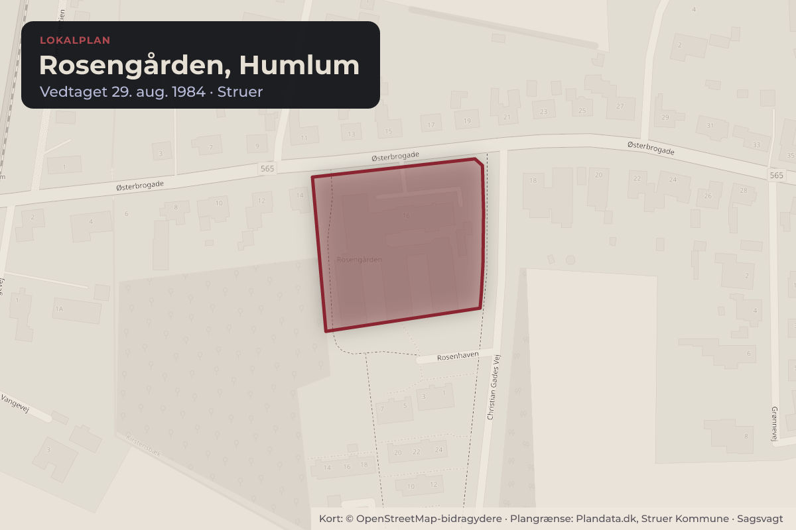

På dagsordenen 2. december, Teknik-, miljø- og klimaudvalget, Struer
Igangsætning af lokalplan nr. 376 - For Rosengården i Humlum (TMK)
BoligerByggeri og lokalplanerÆldre og sundhed

Kort: © OpenStreetMap-bidragydere. Plangrænse: Plandata.dk, Struer Kommune.
Kort fortalt
- Hvem
- Teknik-, miljø- og klimaudvalget, Struer Kommune
- Hvornår
- Onsdag 2. december 2026
- Status
- På dagsordenen. Sagen behandles på mødet.
- Næste skridt
- Med udgangspunkt i ovenstående orienterer administrationen hermed om, at planarbejdet igangsættes. Planarbejdet omfatter en miljøscreening, udarbejdelsen af et forslag til en lokalplan og et forslag til et kommuneplantillæg.
Er noget forkert her? Skriv til os
Hvad kan du gøre?
- Skriv til politikerne
- Udvalgets møder er lukkede, men du kan skrive til medlemmerne før mødet onsdag 2. december 2026. Du finder dem på struer.dk.
Læs hele sagen Kommunens egen tekst
Indstilling
ADMINISTRATIONEN INDSTILLER
at planlægningen for lokalplan nr. 375 - for Rosengården i Humlum igangsættes
Baggrund
Østerbrogade 16 i Humlum har tidligere huset plejehjemmet Rosengården. Plejehjemmet
lukkede i 2019 og blev i årene 2022-2024 brugt til at huse flygtninge fra krigen i Ukraine. De
tidligere plejehjemsbygninger blev i 2025 revet ned, hvorefter grunden blev sat til salg og købt
af en privat bygherre.
Bygherre ønsker, at der skal opføres 10 fritliggende boliger på grunden med henblik på
udlejning af disse som privatboliger. Opførelsen af 10 boliger udløser lokalplanpligt efter
Planloven. På den baggrund orienterer administrationen om at arbejdet med lokalplanen
igangsættes.
Formål
Formålet med udarbejdelsen af lokalplanen er:
at give mulighed for, at der kan etableres åben-lav boligbebyggelse på den tidligere
plejehjemsgrund i Humlum.
at områdets disponering samt bebyggelsens organisering og arkitektur indpasses i områdets
karakter og struktur.
at sikre tilgængelighed i området og grønne friarealer, så området kan benyttes af både børn
og ældre.
at sikre, at der skabes forbindelser og sammenhæng til den øvrige by.
Lokalplanområdet
Lokalplanområdet er udlagt til offentlige formål i kommuneplanrammerne 6 O 1 og rekreativt
område i kommuneplanramme 6 R 1 i Kommuneplan 2025. Lokalplanens realisering
forudsætter derfor en revision af kommuneplanrammerne for lokalplanens område. Derfor
udarbejdes forslag til kommuneplantillæg nr. 6 B 7 sideløbende med forslag til lokalplan nr. 376
– Boligområdet Rosengården i Humlum
En mindre del af lokalplanområdet er beliggende indenfor et område, der er omfattet af
lokalplan nr. 363 – Boligområde, Rosenhaven i Humlum og er udlagt som et rekreativt område.
Ved den endelige vedtagelse af lokalplan nr. 376 ophæves den del af lokalplan nr. 363, som
geografisk overlapper med lokalplan nr. 376.
Projektbeskrivelse
Projektet omfatter 10 fritstående boliger, der omkranser et fælles grønt område med legeplads
og opholdsarealer. Boligerne består af fritstående huse med egen have, indkørsel og carport.
Bygherre ønsker at etablere en fælles affaldsstation på området. Her vil administrationen
undersøge om det er hensigtsmæssigt at placere affaldsspande til eksempelvis restaffald ved
hver enkelt bolig, så den fælles affaldsstation vil være til bl.a. pap, plast og metal.
Adgangen til området sker via en ensrettet fællesvej, der kobler sig på Chr. Gades Vej, ved
både ind- og udkørsel. Boligerne ligger langs vejens forløb, hvorfra alle boliger har deres egen
indkørsel med plads til to biler. Derudover er der fælles gæsteparkering i grønne lommer langs
vejen. Der skal etableres handicapparkering i området.
Naturstrategi
I Struer Kommune er der udarbejdet en naturstrategi, der beskriver ambitionerne for
naturområderne i kommunen. I byerne er ambitionen at skabe større biodiversitet med
hjemmehørende arter samtidig med, at der skabes variation mellem den naturlige og den
velpassede natur. Planforslaget indgår i strategiens retningslinjer i forhold til at bidrage til
naturen i nyopførte byområder.
Vandhåndtering
Bygherre udarbejder i forbindelse med udarbejdelsen af lokalplanforslaget en plan for
håndtering af tag- og overfladevand.
Arkitektur
I kommuneplanen er området langs Østerbrogade udpeget som et værdifuldt kulturmiljø. Da
projektområdet ligger langs samme vej, bør sammenhængen med lokalområdet indtænkes i
arkitekturen, så det ikke strider imod områdets særlige kvaliteter. Her er valget af materialer og
bygningernes formsprog særligt vigtige.
Offentlig høring
Humlum Borgerforening er blevet fremlagt for projektforslaget i den indledende proces og har
herigennem haft mulighed for at komme med bemærkninger til projektet. Borgerforeningen er
meget positive overfor projektforslaget. Derudover sendes planforslaget til offentlig høring
inden vedtagelse, hvor relevante parter kan indsende deres høringssvar.
Videre proces
Med udgangspunkt i ovenstående orienterer administrationen hermed om, at planarbejdet
igangsættes. Planarbejdet omfatter en miljøscreening, udarbejdelsen af et forslag til en
lokalplan og et forslag til et kommuneplantillæg.
Lovgrundlag
Planloven, § 13 (Lokalplanpligt)
Planloven, § 16 (Lokalplanens indhold)
Planloven, § 24 (Offentliggørelse og høring)
Planloven, § 5 a og § 5 b (Kystnærhedszonen)
Naturbeskyttelsesloven, § 17 (Skovbyggelinje)
Kilde: Struer Kommune, Teknik-, miljø- og klimaudvalget, dagsorden fra mødet onsdag 2. december 2026, punkt 4. Læs den originale sag hos kommunen.